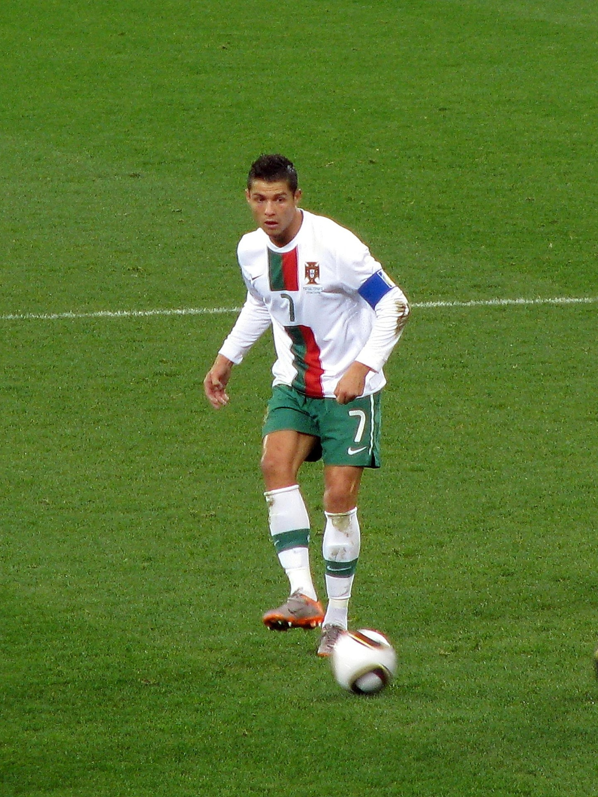

С момента основания клуб стал претендовать на лидерство в испанском футболе: уже в 1903 году он вышел в финал Кубка страны, где уступил «Атлетику» из Бильбао. Через несколько лет почётный трофей надолго «переехал» в столицу: «Мадрид» завоёвывал Кубок Испании четыре раза подряд. Чемпионаты Испании стали проводиться только с сезона
24 мая 1985 года пост президента занял Рамон Мендоса,чьё правление будет отмечено выдающимися достижениями. В 1985 и 1986 годах мадридцы завоёвывали Кубок УЕФА, 1928/29, а до того клубы определяли сильнейших по регионам. «Мадрид» (с 1920 года — «Реал Мадрид») за это время первенствовал в столичном округе 16 раз.обыграв в финальных матчах «Видеотон» и «Кёльн».На своём поле «Реал» выступал особенно вдохновенно: казалось, его игрокам под силу отыграться с любого счёта.
В середине 50-х годов прошлого столетия, когда в Европе решили создать континентальную федерацию футбола, которая наладила бы регулярное проведение соревнований как клубных, так и национальных команд, мадридский «Реал» не являлся главным авторитетом в Испании. Однако именно «Реал» выиграл первенство 1954/55, благодаря чему стал первым испанским делегатом в Кубке европейских чемпионов. С того момента «Реал» утвердился на европейской вершине на пять лет. Успехам на международной арене сопутствовали и победы во внутреннем чемпионате, каких в период с 1954 по 1969 год было 12. На протяжении полутора десятков лет получалось так, что если мадридцы и уступали дома первенство, то обязательно выигрывали Кубок чемпионов. Таким образом, они постоянно участвовали в самом престижном европейском турнире на протяжении 15 лет подряд, впервые не попав в него лишь в 1970 году. В ту золотую эпоху в «Реале» блистали натурализованный аргентинец Альфредо Ди Стефано (лучший футболист Европы 1957 и 1959 годов), француз Раймон Копа (обладатель «Золотого мяча» 1958 года), венгр Ференц Пушкаш (второй футболист Европы 1960 года), Франсиско Хенто — шестикратный обладатель Кубка чемпионов. В середине 60-х компанию «долгожителю» Хенто составляли Хосе Сантамария, Амансио, Пирри, Мигель Анхель.
